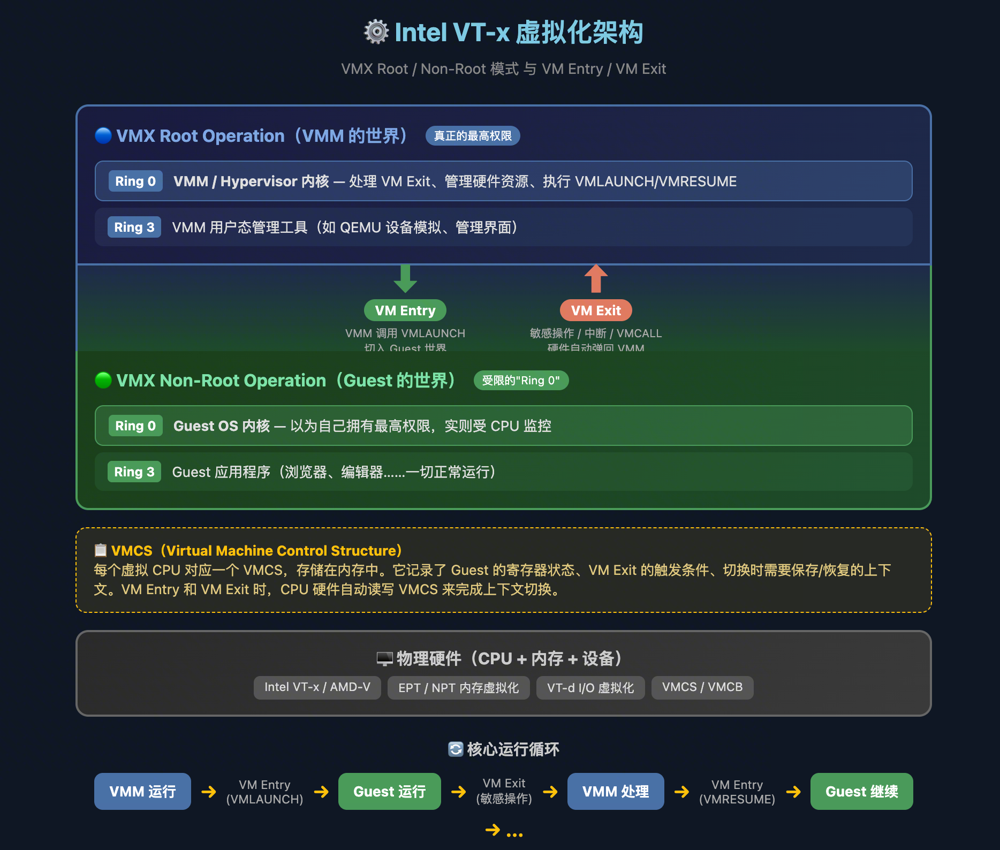
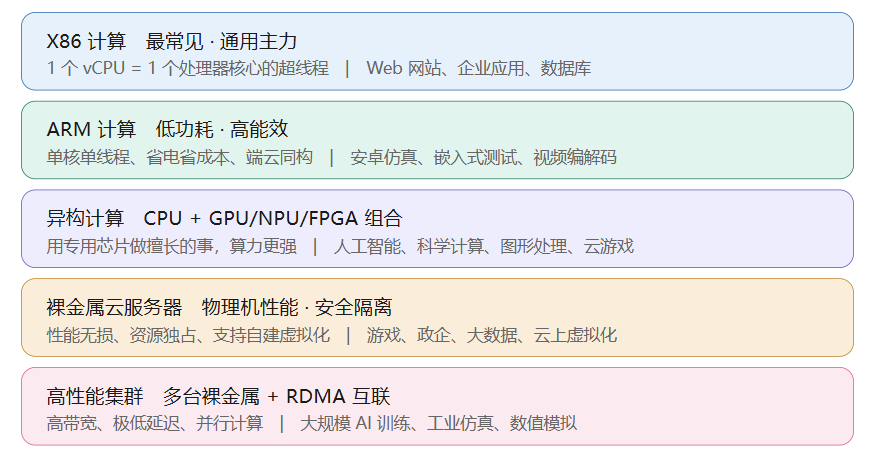
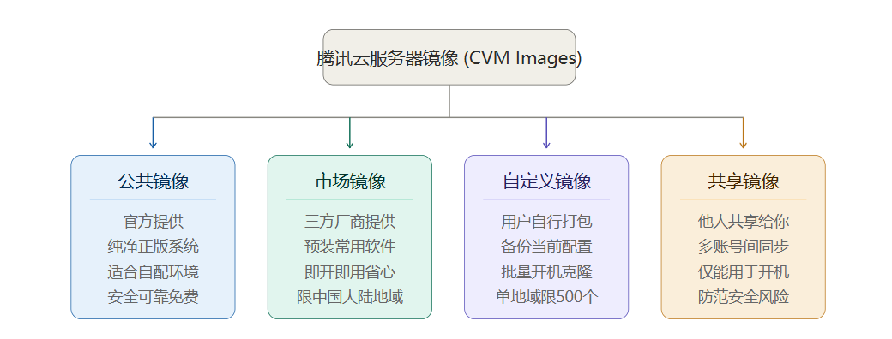
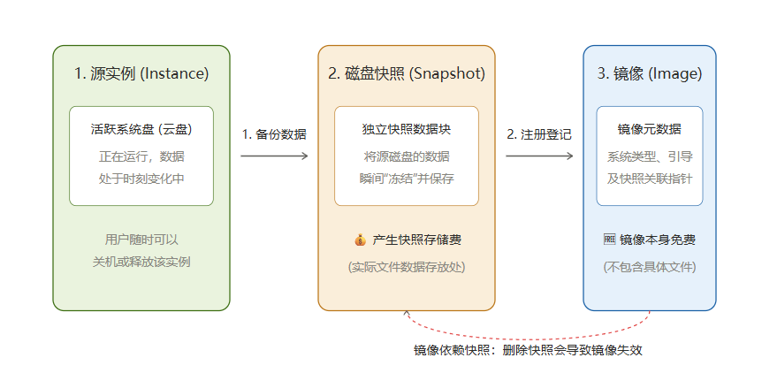

主题定位：从物理机虚拟化 → CVM 实例 → 专属 / 混合云交付形态的思维链路。
# 上篇・虚拟化技术原理
# 虚拟化经典理论
1964 年 Popek 和 Goldberg 提出了虚拟化的经典定理：一个架构要能被完美虚拟化，所有敏感指令（sensitive instructions）都必须是特权指令（privileged instructions）。
但 x86 家族的 CPU 不满足这个条件。x86 中有大约 **17 条指令是 "敏感但非特权"** 的，不会被 trap（异常捕获）。这正是早期 x86 虚拟化必须解决的核心难题。
补充背景：Ring 0-3 是 x86 CPU 的 特权级机制，Ring 0 权限最高（内核态），Ring 3 最低（用户态）。这套特权级机制、以及上述 "敏感但非特权" 指令问题，在 32 位和 64 位模式下都存在。
# 软件虚拟化（早期）
早期在没有硬件支持时，有两条技术路线：全虚拟化与半虚拟化。
| 对比维度 | 全虚拟化 | 半虚拟化 |
|---|---|---|
| Guest OS | 未修改，以为自己在 Ring 0 | 已修改，知道自己在虚拟化环境 |
| 特权指令处理 | Trap（异常捕获）→ Handle（翻译）→ Emulate（模拟），慢 | Hypercall 直接调用，快 |
| VMM 位置 | Ring 0（真正的特权级） | Ring 0 |
| Guest OS 位置 | Ring 1（被降级，但 OS 不知道） | Ring 1（OS 主动配合） |
| 兼容性 | ✅ 任意 OS 无需修改 | ❌ 需要改内核源码 |
| 性能 | ❌ 较差 | ✅ 接近原生 |

Binary Translation（二进制翻译）—— 全虚拟化的补丁：
由于 x86 存在那 17 条 "敏感但非特权" 指令不会被 trap，全虚拟化单靠 Trap-and-Emulate 无法覆盖，于是引入二进制翻译来填坑：
全虚拟化（软件方式）= Trap-and-Emulate + Binary Translation
↑ ↑
处理"会Trap的"指令 处理"不会Trap的"指令
（CPU硬件机制自动触发） （VMM 提前扫描改写，软件补偿）
# VMM / Hypervisor
VMM 全称 Virtual Machine Monitor（虚拟机监控器），也常被称为 Hypervisor，是虚拟化技术的核心组件。
它是一种运行在物理主机硬件和虚拟机（VM）之间的中间层软件：向下掌控实际的物理资源，向上提供标准化、隔离化的虚拟硬件平台。为实现这一点，它截取虚拟机对物理机的访问并重定向，让虚拟机以为自己独享整个物理资源。
# Type 1 Hypervisor：裸金属虚拟化
没有 Host OS，VMM 自己就是 "操作系统"，独占 Ring 0。
产品：VMware ESXi、Xen、Microsoft Hyper-V。
这种方案里没有 Host OS 的概念。你用 ESXi 装服务器时会发现，开机后进入的就是一个很简陋的管理界面，它本身就是一个极度精简的 "操作系统"—— 但它的核心职责是管理虚拟机，而不是给你当桌面用。
前述的 Ring 降级模型（Guest OS 放 Ring 1，VMM 放 Ring 0）说的就是这种架构，不存在 "Host OS 和 VMM 抢 Ring 0" 的问题。
# Type 2 Hypervisor：宿主型虚拟化
Host OS 已经在 Ring 0，VMM 作为一个应用运行其上。
这就是你日常用的 VMware Workstation、VirtualBox 的方式。你在 Windows/Linux 桌面上装一个虚拟化软件，打开窗口就能跑虚拟机。
此时物理机的 Host OS 牢牢占据 Ring 0，VMM 分为两部分：
- 一部分在 Ring 3 用户态程序（如 GUI 界面、用户交互）；
- 另一部分以内核模块 / 驱动形式嵌入 Host OS，借用其 Ring 0 权限做关键操作。
但这很别扭：VMM 依赖 Host OS，效率和隔离性都差，权限边界模糊、实现复杂。
# 硬件辅助虚拟化（最新）：Intel VT-x / AMD-V
Intel 和 AMD 后来推出了硬件辅助虚拟化（Intel VT-x / AMD-V），让所有敏感指令都能被正确捕获，从根本上解决了 x86 的先天缺陷。
VT-x 增加的是一个正交的、独立的维度：Root 模式 vs Non-Root 模式。它和 Ring 级别是两个独立的轴，不是在 Ring 上面再叠一层：
│ VMX Root（VMM的世界） │ VMX Non-Root（Guest的世界）
─────────────┼───────────────────────┼───────────────────────────────
Ring 0 │ VMM 内核 │ Guest OS 内核
Ring 1 │ （通常不用） │ （通常不用）
Ring 2 │ （通常不用） │ （通常不用）
Ring 3 │ VMM 的用户态工具 │ Guest 应用程序
两个世界里各自都有完整的 Ring 0-3。Guest OS 在 Non-Root 模式的 Ring 0 里运行，它 "以为" 自己拥有最高权限，但 CPU 硬件知道这是 Non-Root 的 Ring 0，遇到敏感操作会自动 VM Exit 到 Root 模式交给 VMM 处理。

腾讯 KVM 4.0 内核：通常指腾讯自研或深度定制优化的宿主机虚拟化系统内核。它作为整机宿主机的最底层大脑，直接调度物理 CPU、内存并驱动硬件网卡，是承上启下的 "软枢纽"。
# 中篇・云计算实例
# IaaS 技术全景
IaaS（Infrastructure as a Service，基础设施即服务）不是单一产品，而是由计算、网络、存储、虚拟化和物理资源共同组成的基础设施服务体系
以腾讯云平台为例，其 IaaS 图景：
flowchart TB | |
CVM["CVM 实例<br/>用户业务运行载体"] | |
VPC["VPC<br/>逻辑隔离网络"] | |
CBS["CBS<br/>分布式块存储"] | |
SCHEDULE{"宿主机部署方式"} | |
SHARED["共享宿主机<br/>多租户共享物理服务器"] | |
CDH["CDH<br/>单租户独享物理服务器"] | |
KVM["宿主机虚拟化平台<br/>KVM 及虚拟机管理、I/O 接入组件"] | |
NETWORK["宿主机和云网络数据面<br/>智能网卡、bonding、交换网络等"] | |
HARDWARE["物理计算资源<br/>CPU、内存、网卡等"] | |
STORAGE["CBS 后端分布式存储集群"] | |
CVM -->|虚拟网卡接入| VPC | |
CVM -->|系统盘或数据盘挂载| CBS | |
CVM -->|被调度到| SCHEDULE | |
SCHEDULE --> SHARED | |
SCHEDULE --> CDH | |
SHARED --> KVM | |
CDH --> KVM | |
KVM --> HARDWARE | |
VPC -.数据面依赖.-> NETWORK | |
CBS -.存储 I/O 依赖.-> NETWORK | |
NETWORK --> HARDWARE | |
CBS --> STORAGE |
-
物理层是整个架构的硬基础，
其包括服务器 CPU、内存、网卡、交换机和存储节点等实际硬件。
-
虚拟化层 是承上启下的软枢纽。
宿主机虚拟化平台运行在物理服务器上，利用 KVM 等技术把物理 CPU、内存资源提供给不同的 CVM，并完成虚拟机生命周期管理和 I/O 接入。
KVM 主要提供 CPU、内存和中断等内核虚拟化能力；
而网卡、磁盘、设备 I/O 及资源调度，需由 QEMU、VStation 等组件协同完成。 -
网络与存储层 是两类并列的平台服务
- VPC 提供逻辑隔离网络、IP 地址、子网、路由和访问控制；
- CBS 提供与单台宿主机解耦的持久化块存储。
VPC 和 CBS 都是跨宿主机运行的平台级服务，通过各自的数据通路接入 CVM。
-
实例层 是最终交付的业务载体。
CVM 是最终承载用户操作系统和业务应用的计算实例。
创建 CVM 时，腾讯云会完成以下资源组合：
- 在共享宿主机或指定 CDH 上分配 vCPU 和内存；
- 通过宿主机虚拟化平台创建并运行虚拟机；
- 将虚拟网卡接入指定的 VPC 子网；
- 将 CBS 或本地盘配置为系统盘和数据盘；
- 启动操作系统并交付给用户使用。
核心组件最小释义：
-
KVM（Kernel-based Virtual Machine） 4.0 内核：KVM 是 Linux 内核中的硬件虚拟化能力，依托 Intel VT-x、AMD-V 等 CPU 虚拟化扩展，负责为虚拟机提供 CPU、内存及中断等核心虚拟化，而设备 I/O 的模拟则由用户态的 QEMU 承担。
KVM 4.0 内核是腾讯云在其自研虚拟化平台上迭代出的第四代 KVM 底座（历经 1.0→2.0→3.0 演进），自第七代 CVM 实例起正式启用，并延续至第八、九代，与 Intel SPR、AMD Genoa/Milan/Bergamo 等新一代处理器、100GE 双 bonding 网络、CBS 4.0 云硬盘及 VPC 2.0 网络优化配套。相比早期版本，其核心价值在于腾讯对 KVM 的深度优化 —— 通过对 CPU / 内存虚拟化路径的调优，将虚拟化引入的性能损耗压缩至约 1%~2%，使云主机性能高度逼近物理机
-
CVM（Cloud Virtual Machine，云服务器）：是腾讯云提供的弹性计算服务，也是用户最终使用的虚拟机实例。
-
CBS（Cloud Block Storage，云硬盘）：是腾讯云提供的分布式持久块存储服务，可以作为 CVM 的系统盘或数据盘。CBS 数据存放在独立存储集群中，不绑定单台计算宿主机，并通过块存储数据通路挂载给 CVM；其多副本机制可降低硬盘、服务器或机架故障造成的数据丢失风险，这种存算分离机制使数据 SLA 为 99.9999999%。
-
VPC 2.0（Virtual Private Cloud，私有网络）：是腾讯云提供的地域级、逻辑隔离的云上私有网络空间。作为腾讯云第二代软件定义网络（SDN）架构，VPC 2.0 核心改进在于：一是控制器的可扩展性增强，支持大规模的 VPC 与主机接入；二是数据面的硬件卸载能力，将转发逻辑下沉到硬件，降低转发时延、提升吞吐。整体采用控制面与数据面分离的设计。
-
CDH（Cloud Dedicated Host，专属宿主机）：用户独占物理资源的宿主机，详细部署能力见下篇。
网络数据路径：
CVM 内应用 | |
→ Guest OS 网络协议栈 | |
→ 虚拟网卡 | |
→ 宿主机或智能网卡上的网络数据面 | |
→ VPC 路由与安全策略 | |
→ 网络访问目标（CVM、云服务、公网或本地数据中心） |
CBS 存储数据路径：
CVM 内应用 | |
→ 文件系统 | |
→ Guest OS 块设备驱动 | |
→ 虚拟化 I/O 数据通路 | |
→ CBS 接入层 | |
→ CBS 分布式存储集群 |
# 云实例基础
本章以腾讯 CVM 为例，进行讲解展示。
命名规则：前缀 + 数字 + 后缀。
| 部分 | 含义 | 示例 |
|---|---|---|
| S | Intel CPU | S5、S8、S9 |
| SA | AMD CPU | SA5、SA9 |
| 数字 | 代数（越大越新） | 5 → 8 → 9 |
| e | 性能优化版（单核更强） | SA9e、S9e |
| pro | 顶级增强版 | S9pro |
- 所以 S9e = Intel 第 9 代性能版，SA9pro = AMD 第 9 代增强版。
- 主要卖 S9、SA9；要内存 or 计算时卖 M 系列 or C 系列。
S9 vs S9e 选型
S9 省能耗，S9e 性能强（计算、存储 IO、网络）。客户遇到以下情况选 S9e：
- 单核性能是瓶颈（如 Java 应用中某些慢 SQL / 重计算接口）
- 需要 AVX-512 / FP16 向量计算
- 低时延 / 实时性要求极高
最简单的思路：如果业务 "加核就能解决"，选 S9；如果业务 "加核没用，单核必须够快"，选 S9e。
# 五种常见实例

- X86 计算实例：属于 AMD64 /x86-64 家族，主流兼容；主要面向通用型需求，比如 Web 网站、企业级应用（OA、ERP）、各类数据库
- ARM 计算实例：和手机芯片同源，单核单线程的算力（不像 X86 用超线程），主打 "省电"，能效比高，端云同构；面向网站和应用服务器、安卓仿真测试（强项，因为安卓本身跑在 ARM 上）、嵌入式开发测试、视频编解码、基于 CPU 的机器学习。
- 异构计算实例：CPU 搭配 GPU/NPU/FPGA 等硬件的实例；凡是需要强算力的，基本都靠它
- 裸金属云服务器：交付独占物理机性能与资源，面向性能或隔离敏感的游戏、政企、大数据及云上自建虚拟化场景。
- 高性能计算集群（HCC）：为了实现 HPC（高性能计算领域问题），多台裸金属通过 RDMA 互联，使节点之间的通信又快又稳，专门解决 "很多台机器要协同做一件大事" 的并行计算需求；主要面向大规模 AI 训练、工业仿真、生命科学、科学计算和数值模拟等顶级算力场景。
递进关系：
X86/ARM 是单机通用算力（X86 重兼容、ARM 重能效）→ 异构计算用专用芯片补强单机算力 → 裸金属交付独占物理机 → HCC 把多台裸金属组成并行联成超级算力池。
# HPC 问题场景
HPC（高性能计算场景） = 需要用很多台服务器一起算一个超大的问题，解决的通常是 "一台机器几年都算不完" 的问题，所以要把任务拆开让几千台机器一起干。
HPC 领域不是只有 AI、只有 GPU！ 很多问题根本不是矩阵乘法，而是：
- 复杂逻辑
- 不规则访问
- 大量分支判断
比如天气预报、芯片设计、飞机设计 —— 这些场景 GPU 反而发挥不出来。
CPU | |
├─ 调度 | |
├─ IO | |
├─ MPI通信 | |
└─ 复杂逻辑 |
- GPU 擅长 "同一种计算重复一万亿次"；
- CPU 擅长 "复杂逻辑、复杂数据结构和大内存管理"。
传统 HPC 依赖 CPU，现代 HPC 变成 GPU。
# 地域（Region）与可用区（Available Zone）
- 不同地域之间是物理隔离、网络隔离，只能通过公网 IP 或开通云联网互通。
- 不同可用区之间是故障隔离，可通过内网 IP 直接互通，速度快、不花公网流量费。
三条选择原则：
| 考虑点 | 建议 |
|---|---|
| 离用户近 | 选离目标客户最近的地域，访问延迟更低、速度更快。 |
| 方便内网通信 | 同一业务的多种产品尽量放同地域同可用区，直接走内网，又快又省钱。 |
| 容灾考虑 | 把业务分散部署在同地域的不同可用区的同一 VPC 中，一个机房出故障另一个还能顶上，实现高可用。 |
买的每一种云资源，它的 "有效范围" 是不一样的，这决定了它能不能跨区使用。可分为三类：
- 绑定到单个可用区：云服务器实例（CVM）、云硬盘、子网。（如云硬盘只能挂载到同一可用区的服务器上）
- 整个地域内通用：自定义镜像、置放群组、安全组、弹性 IP、私有网络 VPC、负载均衡、快照、路由表等。
- 全局 / 全地域通用：账号（全球唯一）、SSH 密钥（所有地域可用）。
# 计费模式
稳定类：
- 包年包月：承诺使用某一具体虚拟机实例，计算和 SSD 的消费固定。
- 节省计划：承诺每小时消费（如 10 元），不到按 10 元算，超过继续按量计费，主要为享受折扣。
- 包销：即保底消费，必须消费，不然也扣。
不稳定类：
- 按量计费：弹性伸缩，正常计费 baseline。
- 竞价实例："超低价闲置资源抛售，但面临随时被强制中断的风险"。一旦正常付费用户（按量 / 包年包月）对算力需求上升、或市场竞价价格超过你设定的出价上限，云厂商会在提前 2 分钟通知后强行关机并收回。适合高度容错、可中断、支持断点续传的分布式计算。
# 镜像与快照
四种可选镜像：公共镜像、云市场镜像、自定义镜像、共享镜像。

快照（Snapshot） 就像一台物理层面的 "时间机器"，大小通常在 GB-TB 级别，和 git 蛮像的：
- 拍下的瞬间：记录虚拟机在某一特定时间点磁盘上的所有数据块（Blocks）。若选择保存运行状态，甚至连那一瞬间的 ** 运行内存（RAM）** 也会一起冻结（比如你开着多少个网页、正在打什么字）。
- 恢复状态：系统装错驱动、中毒或配置崩溃时，一键 "恢复快照" 即可瞬间退回拍照那一刻。
- 增量保存：和 git 一样，snapshot 只保存相对上一次发生改变的磁盘数据块，且支持树状历史分支。
镜像与快照的底层关系
在创建自定义镜像时，会默认创建关联该镜像的快照，且保留自定义镜像会产生一定的快照费用

如上面的技术结构图所示，云厂商在物理底层只有 “磁盘快照”，在逻辑定义上层把其分为 “镜像产品” 和 “快照产品”：
- 快照（Snapshot）针对云盘，是真正存放你那几十 GB 物理文件的地方：
- 当你点下 “创建自定义镜像” 时，云平台第一步先对源实例的系统盘 & 数据盘拍个照。
- 这些快照被拷贝并固化下来，成为一个只读的、不受任何实例生死影响的独立快照。
- 镜像（Image）针对实例，其实只是一个 “轻量级的空壳（元数据）”：
- 镜像本身其实非常小，它不包含任何磁盘上的文件。它只记录一些配置信息（如：这是什么操作系统、系统架构是什么、需要多少内存启动）。
- 最重要的一点：镜像内部包含一个 “指针”，指向它所绑定的那个只读快照。
- 计费的真相：
- 因为真正占用云平台昂贵的分布式硬盘空间的是快照（也就是那些具体的系统盘文件数据），所以云厂商收取的实际上是 **“快照存储费”**，而 “自定义镜像” 这个元数据外壳本身通常是免费的。
一个实例启动，须绑定一个操作系统（即镜像）；
一个镜像有效，须绑定好其对应快照。
# 云上操作系统
在云计算中，操作系统并非传统意义上的手动安装程序，其本质就是一个封装了系统内核、驱动及启动引导信息的可部署镜像模板。
以 TencentOS 为例，其优势在于：
- 一堆认证 + 10 年海量用户测试
- 兼容 CentOS，避免繁重迁移、保障兼容
可将这些优势概括为 1 核心 + 4 卖点：
- 1 核心：信创、国产自主化。
- 4 卖点：
- RUE 如意：CPU 利用率优化 & 保证稳定，离在线业务设置不同优先级。
- 悟能：降低能耗。
- qGPU：对标 vGPU，更便宜
- 内存悟净：分级卸载内存，冷热管理。
# 置放群组
- 容灾程度层级：交换机 ≥ 机架 > 物理机。外层包含内层，约束越多越严格。交换机和机架的层级大小具体看 TOR（一架一交换机）还是 EOR（一交换机多机架）。
- 亲和度方向：数字越小越严格（1 = 一个单位只放一个），数字越大越能容忍 "挤一起"、越容易调度成功。
- 代价意识：层级越严 + 亲和度越小 = 容灾越强，但越可能因硬件不足而部分实例创建失败 —— 架构设计时必须和 "业务可用性要求"" 成本 ""可调度性" 一起权衡。
亲和度 = 1 ←———————————————→ 亲和度 = 10 | |
容灾最强 容灾最弱 | |
最难创建成功 最容易创建成功 | |
（要求硬件单位多） （挤在一起也行） |
# 下篇・专属与混合云部署形态
# CDH 专属宿主机（Cloud Dedicated Host）
CDH 定义：让用户独占物理资源的物理服务器。普通公有云中多租户 CVM 会共享同一台宿主机；CDH 模式下整台物理机 100% 专属于某一租户，租户可在其上自主创建和管理多台 CVM 实例，满足极高安全合规与物理隔离需求。
CDH vs 裸金属：CDH 就是在裸金属上进行了虚拟化，二者都是独享服务器。
单台 CDH 的核心应用场景（虽无法做到高可用和灾备，但并非毫无意义）：
- 合规与安全要求：某些金融或政务业务要求数据必须物理隔离，不能和其他公司业务跑在同一台物理机上。
- 自带许可证（BYOL）：很多昂贵商业软件（如 Oracle 数据库、Windows Server）按 "物理 CPU 核心数" 授权。买一台 CDH 可明确物理核心数，从而合法且省钱地使用现有的软件 License。
- 避免 "吵闹的邻居"：公有云普通虚机性能可能被同物理机其他客户影响，单台 CDH 能保证性能绝对稳定。
多台 CDH + 云厂商网络（VPC） ≈ 租一个私有云，业界通常称为 **"托管私有云" 或 "专属云"**，安全独享可灾备。
# CDC 本地专用集群（Cloud Dedicated Cluster）
腾讯云将标准的公有云服务器、存储、网络等硬件直接搬到客户指定的本地机房（IDC / 厂区 / 办公楼）中，但其控制面（管控层）仍连接并托管在腾讯云公有云控制台。
"一云多态，同源同构"：
- 本地部署：满足数据不出本地、超低时延访问的物理要求。
- 中心纳管：客户通过公有云控制台统一管理，软件版本、API、生态与公有云完全一致，且由腾讯云负责全部软硬件日常运维。
- 设备订阅（轻资产）：客户无需买断硬件，采用租赁（订阅）服务模式。最小起步规模极轻（3 台管理节点 + 2 台 CVM 算力节点起），降低初期资金投入。
需求 & 卖点：
- 安全合规：金融、政府、部分央国企的敏感数据被要求绝对不能离开本地 IDC，但又需要公有云的 PaaS/SaaS 服务；CDC 提供版本维护、免费升级。
- 超低时延：智能制造（如边缘工厂车间）、车联网、智能驾驶等要求微秒 / 毫秒级本地时延，公有云网络延迟无法满足。
- 运维困难：自建传统私有云或 VMware，硬件维护繁琐、软件升级昂贵易停服、安全漏洞无法及时修复；CDC 有 SLA，还有高可用。
# CDZ 专属可用区（Cloud Dedicated Zone）
CDZ 是客户机房里的一个完整公有云 AZ。与 CDC 对比：
| CDC（本地专用集群） | CDZ（专属可用区） | |
|---|---|---|
| 本质 | 受公有云纳管的边缘集群 | 客户机房里的一个完整公有云 AZ |
| 规模 | 轻（1 机柜、3 节点起步） | 重（50~200 节点起步，可达万级） |
| 能力 | 50+ 常用核心服务 | 100+ 全矩阵服务，支持多 AZ 灾备 |
其余差异
交付周期： CDC 2-4 周 vs CDZ 2-3 个月；
机房标准： CDC 简化 vs CDZ 高标；
网络： CDC 可用 VPN vs CDZ 须双专线。
-
CDC —— 解决 "轻量、敏捷、就近" 的需求。
客户场景：预算有限、机房简陋、规模不大、要快速落地。
典型客户：工厂边缘车间、中小企业上云、替换 VMware。
关键词：省、快、灵活。
-
CDZ —— 解决 "大规模、高合规、高灾备" 的需求。
客户场景：要把核心生产系统整体搬回本地，要全套云能力，要物理隔离，要金融级同城双活。
典型客户：大型央国企、金融机构核心系统。
关键词：全、稳、独占。
# CHC 云托付物理服务器（Cloud Hosting Computer）
把客户自己已经买好的、闲置的物理服务器，纳入腾讯云控制台来统一管理和调度。
选型口诀：客户机房里有一堆还能用的旧服务器舍不得扔、又想云化统一管 → 这就是 CHC 的主场。